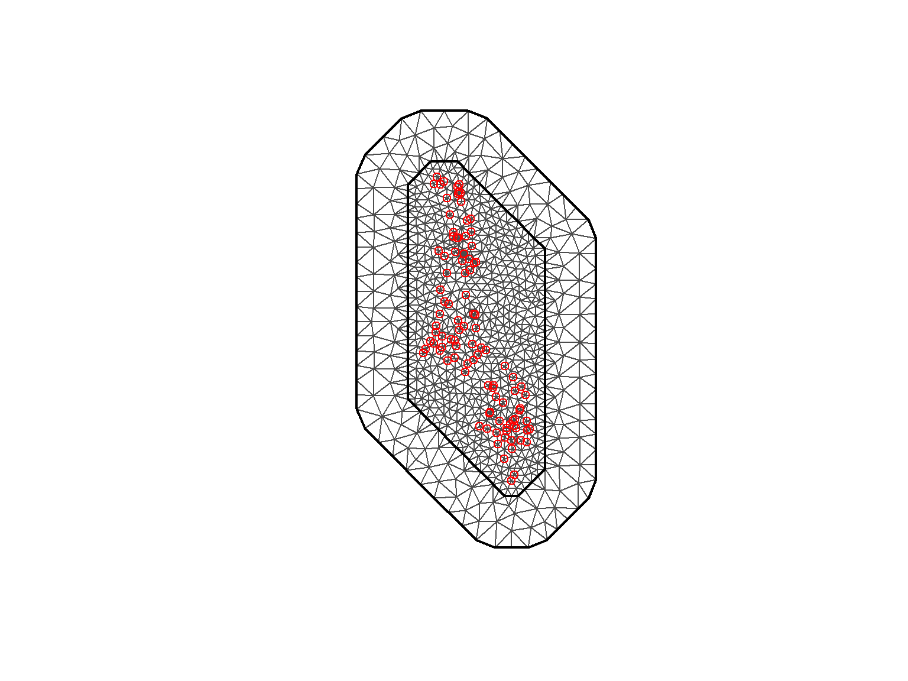

Here we are testing different level of aggregation of maize Se concentration to identify which aggregation best explain the plasma Se of women in Malawi. As, plasma Se has been reported previously to be highly dependent on dietary Se intake and, in the context of Malawi to maize Se concentration.
Therefore, the models tested here will all include the same explanatory covariates related to individual plasma Se variation (e.g. age, CRP), and related to food system variation (e.g. distance to main lakes, or maize aggregation).
For implementing the models, we used Bayesian approach implemented using Integrated nested Laplace approximations (INLA) in combination with the stochastic partial differential equation (SPDE) approach to model the spatial component. These were implemented using R-INLA package (INLA) and (spdep). A loop where all the parameters are hold constant except for the different aggregation of maize Se concentration was used to, then we compare the results.
First we prepared the environment, which included, loading the libraries, the data and generating the list to store all the output of the models tested.
Code
# Loading librarieslibrary(INLA) # Modelling (R INLA)library(sf) # spatial data manipulationlibrary(spdep) # grid and neighbourslibrary(dplyr) # data wrangling# Loading the data(file <-grep("plasma.*v2.0.0", list.files(here::here("data", "inter-output", "model")), value =TRUE))
# Distance to the lakedist <-readRDS(here::here("data", "inter-output", "cluster-distance-to-mwi-lakes.RDS"))# A list to store the models outputsmodels <-list()
8.1 Model selection
The base model assumed that plasma Se concentration and the underlying spatial process were continuous and that followed Gaussian distribution with mean and unknown variance at any location. The spatially structured random effect with zero mean was characterised using the Matern covariance function which was implement using the SPDE approach. This appraoch is an approximation to the process as a Gaussian latent field. In addition, we included a random effect to account for the variability in each the cluster (within cluster variation not explained by the individual- and household-level covariates).
\(ε_i\) = measurement error which follows a Gaussian distribution:
\(ε_i\) ~ \(N(0, σ_e^2)\)
The error variance (\(σ_e^2)\)) is called “nugget effect” in geostatistics, which refers to the unknown not spatially or short-range variation.
8.1.1 Model variable selection
Then, we are selecting our covariates which are stored in a vector. In the final model, we included the following covariates: maize Se aggregated (Se_mean), wealth index (wealth_indx), rural/urban residency (urbanity), age (AGE_IN_YEARS), CRP (crp), AGP (agp), and distance to the main lakes (dist_to_lake).
Note that of the covariates: only wealth index, age, CRP, and AGP are unique for each individual, the other are the same for each cluster.
First, we are loading the dataset, which contains all the variables, except the distance to main lakes, which is joined here.
Code
i =1# Loading the data plasma_se <-readRDS(here::here("data", "inter-output", "model", file[i])) %>%# Joining the variable distance to inland water bodyleft_join(., dist) # Ensuring cluster is not considered numericplasma_se$survey_cluster1 <-as.character(plasma_se$survey_cluster1)
Then, we need to rename some variables, selecting the variables needed and ensuring that we do not have missing values for the variables used in the model.
Once we have the data ready, the first step for fitting a SPDE model using R-INLA modelling is to create the mesh. The mesh is generated based on the locations of our sample, i.e. the cluster centroids. Before selecting the final settings of the mesh, a number of mesh were tested. For more information on mesh selection, see section model selection and calibration, and the script inla/mesh-testing.R.
We defined the mesh using the coordinates of the DHS cluster data. We also defined the maximum edges of the triangles and the sparsity of the triangle outside the boundary (to avoid bounary effects).
Code
# Locationscoord <-cbind(plasma_se$Longitude, plasma_se$Latitude)#Summary of the distance between the locationssummary(dist(coord))
Min. 1st Qu. Median Mean 3rd Qu. Max.
0.000 1.142 2.358 2.598 3.787 7.794
Code
# Creating the mesh# Generating the mesh based on the point locationsmesh <-inla.mesh.2d(loc = coord, max.edge =c(.3, .7), cutoff =c(0.0001)) plot(mesh, asp=1, main='')points(coord, col ="red", pch =1)

8.2.2 The projection matrix
Once we have the mesh, we can create the projection layer (A) which will be used to map the predictions from the SPDE and the observed points. This is because we are predicting at the vertices of the mesh. For more information, See Lindgren and Rue (2015).
We can check here that all the weights for each triangle sum 1.
Then, we are building the SPDE model using the function inla.spde2.matern(). Here, we set the spatial smoothness parameter \(alpha\) to alpha=2 as it is a two dimension model. Following the recommendations in Moraga, 2021 (Moraga et al. (2021)). Similarly to the prior of the idd hyperparameter, we set uninformative priors as the intend of the model were not prediction (i.e, predicting plasma Se concentration in unsampled location) but to test the performance of different maize Se aggregation level (i.e. which would better explain the plasma Se concentration data). Different priors were also tested, as found in the script (inla/inla-spde.R) which yielded the same conclusion.
Code
## Building the SPDE model (Matern estimator) # (alpha is related to the smoothness parameter)# Priors are set spde <-inla.spde2.pcmatern(mesh = mesh,alpha =2 ,prior.range =c(1, 0.01), ## P(range < 1) = 0.01prior.sigma =c(1, 0.5), ## P(sigma > 1) = 0.5constr =TRUE) # this is optional
Generating index for the spatial random effect to be stored, and a list for the covariates.
Code
## Setting the SPDE index (to store the random effect)spde.index <-inla.spde.make.index(name ="spatial.field",n.spde = spde$n.spde)# Covariate listcovs <- plasma_se %>% dplyr::select(covar) %>%as.list()
After that we need to prepare the stack (inla.stack()). This is a useful function where you can stack the data which help organise the data for the model. Here, we combine:
the response variable (y), which, for our model is the plasma Se concentration.
the vector of multiplication factors, which is normally a 1 for each separated one: such as the intercept (1), the fixed effects (1), the cluster random effect (the iid, in our case) (1), and the spatial matrix (A). This is because the SPDE model that will be defined in the triangle nodes (m) while the covariates, cluster random effect and the intercept will be at the point locations (n).
the effects: intercept, fixed effect matrix, cluster random effect (iid) and the spatial random effect (spde).
The projector list (A) and the effects are related and hence they need to be even and in the respective order.
Code
# Parameters # No of locations (nrow(plasma_se))N <-nrow(plasma_se)# The data stackstack <-inla.stack(# specify the response variabledata =list(y = plasma_se$Plasma_Se), # Projector list each effect random and fixed effects A =list(1, 1, 1, A), effects =list(Intercept =rep(1, N), # specify the manual intercept!X = covs, # attach the model matrix (list of covariates)ID = plasma_se$survey_cluster1, # insert vectors of any random effectsw = spde.index)) # attach the w
8.2.3 Formula
Here we are defining our model following the R-INLA standards. Where our response variable plasma Se concentration (y), and the explanatory variables maize Se concentration (Se_mean), CRP (crp), AGP (agp) and distance to the lake (dist_to_lake) were skewerd are log-transformed (See Chapter 2 and Chapter 4 for more information on the plasma Se concentration and the covariates). Then, we are adding a spatial random effect to account for the remaining spatial variation (i.e. spatial variation not accounted by any of the explanatory variables (covariates) in the model), using the SPDE approach (spde). Additionally, we are accounting for pseudo-replication due to shared location (same GPS displaced coordinates) of the individuals in the same cluster using a independent identical random effect (idd).
Code
# Formula for the model (-1 removes the internal intercept)form <-log(y) ~-1+ Intercept +log(Se_mean) + wealth_idx + urbanity + AGE_IN_YEARS +log(crp) +log(agp) +log(dist_to_lake) +# Spatial random effectf(spatial.field, model = spde) +# Cluster random effectf(ID, model ='iid', hyper = hyper.idd, constr =TRUE)# Defining hyper parameter of the idd hyper.idd =list(theta1 =list(prior ="pc.prec", param =c(0.1, 0.5)))
Note, that we need to add -1 or 0 to remove the internal intercept, and to fit it separately.
8.2.4 Random effect hyperparameters
A number of hyperparameter were tested for the random effect (iid). Because, we were comparing model with the same covariates, with the exception of the maize Se aggregation level, and we were not interested in predictions, we kept the priors uninformative (e.g. the probability of having a SD >0.1 is 50%, or \(u\) = 0.1, \(alpha\) = 0.5). See documentation.
In addition, other prior were tested to assess the sensitivity of our conclusions to different parameters (see prior-inla.R).
Finally, we can model the data using the function inla(), here we need to provide the formula which was stored in the object form, the data stack inla.stack.data(stack) the control predictors will extract a simplified predictor matrix. Finally, we can list some of the model performance index, such as CPO or DIC.
Now that all the decision are made and each step of the R-INLA model set up. In the script inla-loop.R, the loop can be run to obtain all the model results.
The model output is then stored in the list (models) for evaluation and comparison.
Lindgren, Finn, and Håvard Rue. 2015. “Bayesian Spatial Modelling with R - INLA.”Journal of Statistical Software 63 (19). https://doi.org/10.18637/jss.v063.i19.
Moraga, Paula, Christopher Dean, Joshua Inoue, Piotr Morawiecki, Shahzeb Raja Noureen, and Fengpei Wang. 2021. “Bayesian Spatial Modelling of Geostatistical Data Using INLA and SPDE Methods: A Case Study Predicting Malaria Risk in Mozambique.”Spatial and Spatio-Temporal Epidemiology 39 (November): 100440. https://doi.org/10.1016/j.sste.2021.100440.